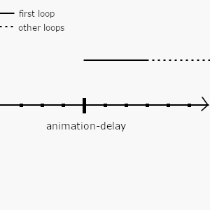

理解CSS动画
这是一篇关于 CSS animation 属性的笔记.
虽然说 MDN 上有 animation 的文档,不过本人比较容易"异想天开",
不确定文档上的说明和我个人的理解是否一致,或者说有没有一些文档上没有说明的内容.
animation
animation 属性用于控制 CSS 动画,相比使用 JavaScript 制作动画,在制作简单的动画方面, animation 更加易用,并且性能更好.
这一条理由就足以说明 animation 属性值得学习.
animation 属性是以下属性的简写(shorthand)以及它们的作用:
animation-delay: 控制动画播放前空白时间.animation-direction: 控制动画的播放顺序.animation-duration: 控制动画的播放时间.animation-fill-mode: 控制动画播放前后如何应用样式.animation-iteration-count: 控制动画播放的循环次数.animation-name: 设置播放哪一个动画,每个动画都有自己的名字名字,而动画是由@keyframes定义的.animation-play-state: 设置动画播放的状态.animation-timing-function: 设置动画如何播放,比如播放速度,播放方式等等.
这些属性里面有几个是不太好理解的,有:
animation-delayanimation-timing-function
后面重点介绍这两个属性,不过在这之前先来了解一下动画的定义.
@keyframes at-rule
动画的实质就是按照一定的顺序对一组图片进行快速切换,由于人的视觉暂留,图片中的内容就像"活"了一样.
Figure 1: 视觉暂留和动画 (图片来自于百度)
而 @keyframes 是利用同样的原理,通过给不同时间点上定义几张关键的图片,也就是关键帧(keyframes),
然后利用计算机的算力按照关键帧之间的差异来"计算"出其中的图片,这些图片叫做帧(frames),而这个过程叫做插值补帧.
最后按照对这组图片进行快速切换.
@keyframes 的使用很简单,
@keyframes <IDENTIFIER> { <OFFSET-1> { style-block-1 } <OFFSET-2> { style-block-2 } ... <OFFSET-n> { style-block-n } }
其中 <IDENTIFIER> 就是动画的名字, animation-name 的值可以设置为它;
<OFFSET-*> 是指整个动画的某一个时间点,因为动画的时间是由 animation-duration 决定的,
所以 <OFFSET-*> 通常 是一个百分比;
还有 style-block-* 是样式表.
一个简单的动画只需要两个关键帧就可以了,它们分别在 0% 和 100% 这两个时间点上,
这两个时间点还可以写成 from 和 to.
下面就是一个完整的动画例子,后面的学习中也会用到这个例子.
@keyframes slide { 0% { margin-left: 0; background-color: red; } 20% { margin-left: 60px; background-color: green; } 40% { margin-left: 120px; background-color: yellow; } 60% { margin-left: 180px; background-color: blue; } 80% { margin-left: 240px; background-color: purple; } 100% { margin-left: 300px; background-color: skyblue; } }
animation-delay 属性
与其说这个属性决定了动画播放前的空白时间,不如说它是控制动画播放的起点.
为什么这么说呢?通过例子来看更直观.
animation-delay 的值是时间(s or ms),可以是正数,也可以是负数.
现在需要循环播放一段 3 秒的动画 slide,不同的值是这样影响动画的播放的。
当 animation-delay = 0,

Figure 2: animation-delay = 0
图里的坐标轴表示的是时间,每两个刻度之间的大小表示1秒,上面的黑色长条是第一次动画的 播放起点.
时间轴上面的实线-虚线组合表示动画播放过程,时间轴和动画过程两者的位置对应,实线表示第一轮动画,虚线表示其他轮次.
这图上的个单个动画时长是3秒,可以看到,播放起点和整个动画过程的起点是一致的,也就是没有任何延迟马上播放动画.
再来看看 animation-delay > 0 的情况, 举个例子,当 animation-delay = 2 的时候,
可以看到播放起点在动画过程起点的前面,需要等2秒动画才开始播放.

Figure 3: animation-delay = 2
最后 animation-delay < 0 的情况, 当 animation-delay = -2 的时候,
播放起点直接在第一轮动画的2秒后处开始播放,也就是从第一轮动画的 \(\frac{2}{3}\) 位置播放,
也就是处于 60% 和 80% 之间,

Figure 4: animation-delay = -2
animation-timing-function 属性
这是控制动画是如何过渡的,个人理解它是用来控制 关健帧之间补帧方式 的.
它的值支持以下:
easelinearease-inease-outease-in-outcubic-bezier(p1, p2, p3, p4)steps(n, <jumpterm>)
每一个值实际上是一个数学函数,它们基本大概是这个样子: \(outputRatio = f(timeRatio)\).
\(outputRatio\) 是"产生"帧的数量比, \(timeRatio\) 就是动画的时间点.
当一个动画的"图片"数量固定时,固定时间内生成的帧越多,动画播放就越快.
因此可以通过这个来控制动画播放速度, \(outputRatio = f(timeRatio)\) 的函数图像就能反应了关键帧之间的播放速度变化.
cubic-bezier(x1, y1, x2, y2) 是 ease, linear, ease-in, ease-out 和 ease-in-out 的一般化.
(未完待续…)